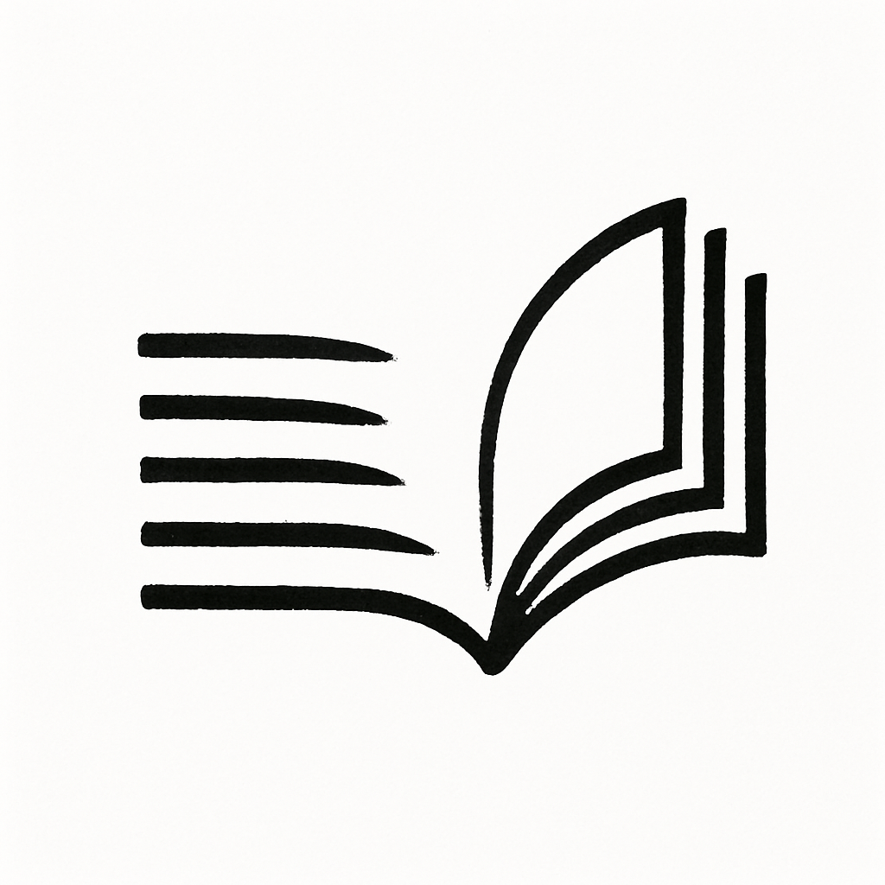

| Data | Tema | Leitura obrigatória |
|---|---|---|
| 2025-04-14 | Apresentação da disciplina. Sistema acadêmico brasileiro. | Entendendo a organização do sistema acadêmico brasileiro, parte do livro Guia do trabalho científico: do projeto à redação final, de Celso Ferrarezi Júnior. Páginas 7 - 9. Disponível em: vbk://9788572447638/epubcfi/6/14%5B%3Bvnd.vst.idref%3Dcap1.xhtml%5D |
| 2025-04-17 | Pensamento científico. | Think like a scientist: The power of a scientific mindset, artigo de Santiago Gisler publicado pela Ivory Embassy. Disponível em: https://ivoryembassy.com/scientific-mindset/ |
| 2025-04-28 | Aplicação de teste diagnóstico sobre competência textual acadêmica | Teste diagnóstico |
| 2025-04-28 | Autoria, opinião e escrita acadêmica. | Uma questão de opinião, parte do livro Como escrever um texto científico, de Fabio Appolinário e Isaac Gil. Páginas 16 - 18. Disponível em: vbk://9788599519493/page/11 |
| 2025-05-05 | Argumentos de senso comum e senso crítico. Argumentos empíricos e de autoridade. | Argumentos de senso comum e argumentos de senso crítico, parte do livro Leitura e escrita acadêmicas, de Nádia Studzinski Estima de Castro e colaboradores. Páginas 14 - 23. Disponível em: vbk://9788533500228/page/11. |
| 2025-05-08 | Gerenciadores de referências bibliográficas. | Zotero |
| 2025-05-12 | Citações diretas e indiretas | Citações diretas e indiretas, parte do livro Leitura e escrita acadêmicas, de Nádia Studzinski Estima de Castro e colaboradores. Páginas 89 - 98. Disponível em: vbk://9788533500228/page/89. |
| 2025-05-15 | Fontes confiáveis de informação acadêmica. | Fontes confiáveis de informação acadêmica, parte do livro Leitura e escrita acadêmicas, de Nádia Studzinski Estima de Castro e colaboradores. Páginas 43 - 52. Disponível em: vbk://9788533500228/page/43. |
| 2025-05-19 | Quiz pré-prova | Kahoot |
| 2025-05-22 | 1ª Avaliação | Prova objetiva |
| 2025-05-26 | Comentários sobre a primeira avaliação. | NA |
| 2025-05-29 | NA | NA |
| 2025-06-02 | NA | NA |
| 2025-06-05 | Leitura inspecional e leitura averiguativa | NA |
| 2025-06-09 | Gêneros textuais acadêmicos: plano de trabalho. | Modelo de plabo de trabalho extraído do SIGAA. |
| NA | Gêneros textuais acadêmicos: projeto de pesquisa. | Projeto de pesquisa, parte do livro Produção textual na universidade, de Désirée Motta-Roth e Graciela Rabuske Hendges. Páginas 51 - 64. A ser disponibilizado digitalizado. |
| NA | Gêneros textuais acadêmicos: artigo científico. | Artigo acadêmico: introdução, parte do livro Produção textual na universidade, de Désirée Motta-Roth e Graciela Rabuske Hendges. Páginas 65 - 88. A ser disponibilizado digitalizado. |
Análise e Expressão Textual
1 Programação
1.1 Ementa
Abordar os paradigmas textuais e científicos na produção da escrita científica, a intertextualidade como elemento de linguagem no contexto da textualidade e da oralidade e da visualidade, a coesão e coerência textual como elemento estruturador da linguagem acadêmica, o estilo como mediador entre forma e conteúdo na produção do conhecimento, a interdisciplinaridade como estética da linguagem.
1.2 Objetivos
Promover o desenvolvimento da competência comunicativa dos estudantes no contexto acadêmico, por meio da leitura crítica, da análise linguística e da produção de gêneros acadêmicos, com ênfase na escrita científica e na elaboração de planos de trabalho.
Competência comunicativa é a capacidade de um indivíduo usar a língua de forma eficaz e apropriada em diferentes contextos de comunicação. Esse conceito vai além do simples domínio das regras gramaticais, englobando também o conhecimento dos usos sociais da linguagem, a adequação ao contexto, a capacidade de interpretar e produzir enunciados coerentes e coesos, e de compreender as intenções dos interlocutores.
1.3 Conteúdo Programático
1.3.1 Unidade I – O mundo acadêmico e o fazer científico
Fundamentos da vida universitária, da ciência e da escrita acadêmica • O sistema acadêmico brasileiro: estrutura e funcionamento • Pensamento científico • Fato, opinião e argumentação na escrita acadêmica • A linguagem da ciência: características da escrita acadêmica • Gêneros acadêmicos e o plano de trabalho como gênero institucional • Como fazer citação e referência (normas ABNT) • Introdução à consciência linguística: problemas da Olimpíada Brasileira de Linguística (OBL) • Aspectos gramaticais: colocação pronominal e concordância verbal
1.3.2 Unidade II – Leitura, escrita e estilo na produção científica
Desenvolvimento das competências de leitura, argumentação e escrita científica • Leitura inspecional e averiguativa de textos científicos • Fontes confiáveis e estratégias de busca de informação • Fichamento e revisão de literatura • Coesão e coerência textual • Citações diretas e indiretas; paráfrase e verbos dicendi • Estratégias de argumentação e estilo na escrita acadêmica • Problemas da OBL e atividades de reflexão linguística • Aspectos gramaticais: pontuação e acentuação
1.3.3 Unidade III – Produção do plano de trabalho
Aplicação prática dos conhecimentos na redação de um gênero acadêmico institucional • Etapas do projeto científico e estrutura do plano de trabalho • A justificativa e os objetivos do projeto • Referencial teórico, metodologia e cronograma • Redação clara, concisa e objetiva • Revisão e reescrita com base em critérios técnicos • Avaliação final: entrega do plano de trabalho • Atividades de revisão com base nos objetivos e problemas da OBL • Diagnóstico linguístico final e autoavaliação do progresso
1.4 Competências e habilidades
| Competência | Habilidades |
|---|---|
| Utilizar a linguagem com clareza, precisão e adequação nos contextos acadêmicos. | - Reconhecer diferentes registros linguísticos e níveis de formalidade. - Utilizar a norma-padrão da língua portuguesa em situações de comunicação acadêmica. |
| Ler, compreender e interpretar textos acadêmicos de diferentes gêneros. | - Identificar a organização composicional e os propósitos comunicativos dos gêneros acadêmicos. - Desenvolver estratégias de leitura crítica e analítica. |
| Produzir textos acadêmicos adequados aos gêneros e às normas científicas. | - Elaborar textos com coesão e coerência. - Aplicar corretamente normas de citação e referência (ABNT). - Planejar, redigir e revisar textos científicos. |
| Mobilizar conhecimentos linguísticos, discursivos e culturais na leitura e na produção de textos. | - Analisar os efeitos de sentido produzidos por escolhas linguísticas e discursivas. - Reconhecer e empregar marcas de intertextualidade e argumentação nos textos. |
| Desenvolver autonomia na produção científica e no uso das tecnologias da informação. | - Utilizar ferramentas digitais para organização da pesquisa e produção textual. - Elaborar um plano de trabalho segundo os critérios de projetos de iniciação científica. |
| Ampliar a consciência linguística a partir da reflexão sobre o funcionamento da língua. | - Resolver problemas linguísticos com base em conhecimentos gramaticais. - Analisar fatos linguísticos em contextos reais de uso. |
1.5 Metodologia
A disciplina adota uma abordagem ativa e interdisciplinar, com atividades práticas, estudos de caso, quizzes interativos, resolução de problemas da Olimpíada Brasileira de Linguística (OBL), exercícios de gramática, produção textual orientada, leitura e análise de textos e o uso de ferramentas digitais, como editores de texto com revisão automática e chats de IA para promover a revisão crítica da escrita.
1.6 Avaliação
Avaliação final (40%): Produção de um plano de trabalho nos moldes exigidos em editais de iniciação científica (Pibic).
Três provas objetivas (3 x 20%): Realizadas ao final de cada unidade.
Plano de trabalho: seções esperadas
• Identificação
• Introdução e Justificativa
• Objetivos
• Geral
• Específicos
• Metodologia
• Habilidades desenvolvidas
• Referências bibliográficas1.7 Bibliografia básica
APPOLINÁRIO, Fabio; GIL, Isaac. Como escrever um texto científico. 1ª ed. [S. l.]: Trevisan Editora, 2013. Disponível em: https://bookshelf.vitalsource.com/books/9788599519493.
CASTRO, Nádia Studzinski Estima de et al. Leitura e escrita acadêmicas. Porto Alegre: Sagah, 2019. Disponível em: https://bookshelf.vitalsource.com/books/9788533500228.
VIEIRA, Francisco Eduardo; FARACO, Carlos Alberto. Escrever na Universidade 1 - Fundamentos. 1ª ed. [S. l.]: Parábola Editorial, 2019.
1.8 Bibliografia complementar
ABNT NBR 10520:2023. Informação e documentação – Citações em documentos – Apresentação. Rio de Janeiro: ABNT, 2023.
ABNT NBR 6023:2018. Informação e documentação – Referências – Elaboração. Rio de Janeiro: ABNT, 2018.
CUNHA, Celso; CINTRA, Lindley. Nova gramática do português contemporâneo. 7. ed. Rio de Janeiro: Lexikon, 2019. E-book. Disponível em: https://plataforma.bvirtual.com.br. Acesso em: 02 abr. 2025.
FERRAREZZI JÚNIOR, Celso. Guia do trabalho científico: do projeto à redação final. 1ª ed. [S. l.]: Contexto, 2011. Disponível em: https://bookshelf.vitalsource.com/books/9788572447638.
MENDES, Gilmar Ferreira; FOSTER JÚNIOR, Nestor José. Manual de redação da Presidência da República. rev. atual. Brasília: Presidência da República, 2002. Disponível em: https://www4.planalto.gov.br/centrodeestudos/assuntos/manual-de-redacao-da-presidencia-da-republica/manual-de-redacao.pdf#page=12.08.
Outras obras poderão ser usadas na disciplina.
1.9 Cronograma das aulas (em constante atualização)
